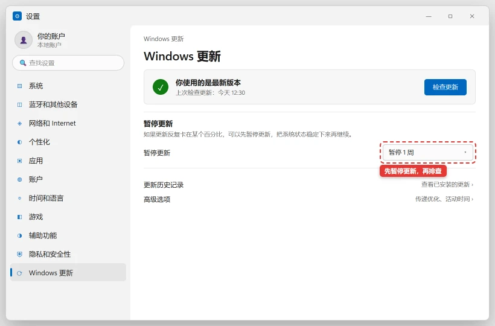

Windows 更新卡在 0% / 一直失败，怎么强制修好
ℹ️ 版本提示：Windows 10 已于 2025-10-14 结束常规安全更新。仍在使用时请先确认设备是否符合升级条件，并查看微软的扩展安全更新政策；不要为了继续更新而安装来源不明的“永久更新工具”。
⚠️ 需谨慎：本文会重命名系统更新缓存目录、清理组件存储并可能卸载更新，操作前请创建还原点并备份重要文件。
⛔ 有数据风险：步骤 8 的重置电脑和步骤 4 的组件存储清理都会改变系统状态，动手前请备份重要数据，并确认你不需要回退已安装的更新。
合规提示：本文只讨论「系统更新被代理设置干扰」的排查方法。请遵守中国大陆法律法规和单位网络管理规定；企业网络下不要自行修改代理配置，一律联系 IT。本文不提供任何绕过网络管控或翻墙的方法与工具。
⛔ 有数据风险：步骤 8 的重置电脑和步骤 4 的组件存储清理都会改变系统状态，动手前请备份重要数据，并确认你不需要回退已安装的更新。
合规提示：本文只讨论「系统更新被代理设置干扰」的排查方法。请遵守中国大陆法律法规和单位网络管理规定；企业网络下不要自行修改代理配置，一律联系 IT。本文不提供任何绕过网络管控或翻墙的方法与工具。
💡 一句话结论
更新卡住基本逃不出四类原因：磁盘空间不足、组件存储损坏、第三方杀软拦截、网络或代理干扰。先看错误码和剩余空间，再用 DISM /RestoreHealth 修组件存储、然后跑 sfc /scannow，最后才重置更新缓存。
⚡ 30 秒快速排查（先试这个）
- 先等 30-60 分钟。 看硬盘灯是否还在闪、风扇是否还在转；有动静说明在装，别强制关机。卡在「正在配置更新」时断电最危险。
- 看错误码。 「设置 → Windows 更新 → 更新历史记录」，记下失败更新的编号（如 KB5063878）和错误码，对照下文表格定方向。
- 看 C 盘空间。 文件资源管理器 →「此电脑」，C 盘剩余不到 20 GB 就先去腾空间：C 盘爆红快满了，怎么安全清理出空间。
纯小白模式 · Windows
小白一键修复
不想研究原因，就下载脚本，右键选择“以管理员身份运行”。脚本执行前仍会再次确认。
- 适合Windows 10/11，更新长期卡在下载阶段、反复失败，但系统仍能正常进入桌面。
- 脚本会停止更新服务，备份并重建 SoftwareDistribution 与 catroot2，再启动服务。
- 运行前保存文档，确认 C 盘至少有 10 GB 可用空间；企业设备先联系 IT。
- 注意脚本不会卸载已安装更新或个人文件；旧缓存会保留为带时间戳的备份目录。
运行方式：下载后先解压（如有），右键 BAT 文件 → 以管理员身份运行 → 阅读提示后选择 Y。浏览器若提示“不常见文件”，请先核对文件名与下方源码。若浏览器无法下载，点“复制全部脚本”，粘贴到记事本，保存类型选择“所有文件”，文件名以 .bat 结尾。
查看完整 BAT 源码
@echo off
chcp 65001 >nul
setlocal EnableExtensions
title 修盒子 - 重置 Windows 更新缓存
fltmc >nul 2>&1
if errorlevel 1 (
echo 正在请求管理员权限...
powershell -NoProfile -Command "Start-Process -FilePath '%~f0' -Verb RunAs"
exit /b
)
echo ============================================================
echo 修盒子 - 重置 Windows 更新缓存
echo ============================================================
echo 将停止更新相关服务，备份并重建 SoftwareDistribution 与 catroot2。
echo 不会卸载已安装更新，不会删除个人文件。
echo 企业统一更新环境请先联系 IT。
echo.
choice /C YN /N /M "确认继续？[Y/N] "
if errorlevel 2 goto :cancelled
for /f %%I in ('powershell -NoProfile -Command "Get-Date -Format yyyyMMddHHmmss"') do set "STAMP=%%I"
echo.
echo [1/5] 停止更新服务...
net stop wuauserv /y >nul 2>&1
net stop cryptSvc /y >nul 2>&1
net stop bits /y >nul 2>&1
net stop msiserver /y >nul 2>&1
echo [2/5] 备份更新缓存目录...
if exist "%SystemRoot%\SoftwareDistribution" ren "%SystemRoot%\SoftwareDistribution" "SoftwareDistribution.fixbox-%STAMP%"
if exist "%SystemRoot%\System32\catroot2" ren "%SystemRoot%\System32\catroot2" "catroot2.fixbox-%STAMP%"
echo [3/5] 重新创建缓存目录...
mkdir "%SystemRoot%\SoftwareDistribution" >nul 2>&1
mkdir "%SystemRoot%\System32\catroot2" >nul 2>&1
echo [4/5] 启动更新服务...
net start cryptSvc >nul 2>&1
net start bits >nul 2>&1
net start msiserver >nul 2>&1
net start wuauserv >nul 2>&1
echo [5/5] 打开 Windows 更新...
start "" ms-settings:windowsupdate
echo.
echo 完成。请重新点击“检查更新”。
echo 旧缓存已保留为 .fixbox-%STAMP% 目录，确认更新正常后可手动删除。
echo 如果失败，请回到文章继续运行 DISM / SFC 步骤。
goto :end
:cancelled
echo.
echo 已取消，没有修改任何设置。
:end
echo.
pause
endlocal
适用 / 不适用
适用：
- 下载卡在 0%、检查更新转圈很久
- 更新装到某个百分比（如 30%、99%）就不动
- 更新反复失败并给出
0x8007xxxx、0x800fxxxx错误码 - 每次重启都回到「正在配置更新」，反复循环
不适用（请转对应文章）：
- 卡在开机品牌 Logo 或无限转圈 → 电脑开机一直转圈 / 卡在品牌 Logo 进不去系统
- 更新过程中蓝屏 → 电脑蓝屏了怎么办：先学会读蓝屏代码
- 电脑根本连不上网 → 属网络故障，先解决联网问题
- 就是 C 盘满了 → C 盘爆红快满了，怎么安全清理出空间
- 公司统一推送更新的电脑 → 联系公司 IT，不要改更新策略
- 更新被关闭或服务被设为禁用 → Windows 更新被关闭了，怎么重新开启
- 只是暂时不想被自动重启打断 → Windows 自动更新怎么安全暂停
开始前确认
- 笔记本接好电源，全程不要断电
- C 盘可用空间 ≥ 20 GB（功能更新建议更多）
- 已经创建系统还原点（开始菜单搜「创建还原点」）
- 记下当前系统版本号：设置 → 系统 → 关于，截个图
- 知道错误码，或者知道失败的是哪个 KB 编号
- 企业/学校设备、装有公司管控软件 → 先联系 IT，不要自行操作
怎么确认修好了
「设置 → Windows 更新」显示「你已是最新版本」，或更新历史里那条失败记录变成「成功安装」；重启后系统版本号已提升，并且不再回到「正在配置更新」的界面。
还是不行？
- 更新过程中蓝屏并回滚 → 电脑蓝屏了怎么办：先学会读蓝屏代码
- 更新后卡在开机 Logo 或一直转圈 → 电脑开机一直转圈 / 卡在品牌 Logo 进不去系统
- 反复失败都是因为 C 盘空间不够 → C 盘爆红快满了，怎么安全清理出空间
- 公司统一推送更新、装了管控软件 → 联系公司 IT
- 系统盘有坏道、组件存储反复损坏且重置也失败 → 硬盘可能已老化，先备份数据再送修
预防
- 保持 C 盘至少 20-30 GB 可用空间，开启「存储感知」自动清理。
- 更新前接好电源、别用手机热点半途断网，更新中不要强制关机。
- 只装一个杀毒软件（推荐系统自带的 Microsoft Defender），多个安全软件会互相拦截。
- 每月手动检查一次更新，别攒半年一次性打，出问题更难定位。
- 大版本升级前创建还原点并备份数据，升级后 10 天内保留「以前的 Windows 安装」以便回退。
更新日志
| 日期 | 版本 | 变更 | 作者/审核 |
|---|---|---|---|
| 2026-10-11 | 1.0 | 首版发布：四类原因分类 + DISM→sfc 修复顺序 | 内容组 |
| 2026-10-27 | 1.2 | 补充更新开启、临时暂停和商店/Codex 安装关联路径 | 内容组 |
分步骤
先判断是真卡住还是在慢慢装
目的：避免误判后强制关机，把一次普通更新变成系统损坏。

进入「设置 → Windows 更新」就能看到当前进度；如果一直卡着，先用「暂停更新」让系统稳定下来，再逐项排查。 操作：
- 保持通电、保持联网，等 30-60 分钟。
- 打开任务管理器看「磁盘」「网络」占用：有明显活动就是在装。
- 打开「设置 → Windows 更新 → 更新历史记录」，记录失败项和错误码。
预期结果：进度继续前进并且更新完成；或拿到一条明确的错误码，供后面按表处理。失败怎么办？
超过 2 小时完全无变化且磁盘零占用 → 长按电源键重启，重启后仍卡在同一处 → 做步骤 2。腾出磁盘空间
目的：空间不足是更新失败最常见的原因，错误码常为 0x80070070、0x80070008。
操作：
- 「设置 → 系统 → 存储 → 清理建议」，勾选临时文件等分类并清理。这是微软官方推荐的首选方式。
- 需要清得更狠时，按 Win+R 输入
cleanmgr→ 选择 C 盘 → 点「清理系统文件」→ 勾选「Windows 更新清理」「传递优化文件」「以前的 Windows 安装」等。 - 清理建议的详细做法见 C 盘爆红快满了，怎么安全清理出空间。
预期结果：C 盘可用空间回到 20 GB 以上。失败怎么办？
清理后仍不够 → 把「下载」「桌面」「视频」里的大文件挪到 D 盘或移动硬盘；同时注意「以前的 Windows 安装」删除后就无法回退旧版本。跑一遍更新疑难解答并重启
目的：疑难解答会自动重置更新组件、修复常见配置问题，是最省事的一步。
操作：
- 「设置 → 系统 → 疑难解答 → 其他疑难解答 → Windows 更新 → 运行」。
- 同时运行「Windows 商店应用」疑难解答（商店组件异常也会影响更新）。
- 完成后重启电脑，再检查更新。
预期结果：疑难解答提示已修复若干问题，重新检查更新能继续下载。失败怎么办？
疑难解答跑完没变化 → 继续步骤 4；如果提示修复了但很快又失败 → 记下错误码继续。用 DISM 修组件存储，再跑 sfc（关键顺序）
目的：组件存储（WinSxS）损坏是 0x80073712、0x800f081f 这类错误的根因；先修好组件存储，sfc 才有可用的修复源。
操作：
- 以管理员身份打开命令提示符（开始菜单搜
cmd→ 右键 → 以管理员身份运行）。 - 先快速体检，再详细扫描，最后修复：
DISM /Online /Cleanup-Image /CheckHealth DISM /Online /Cleanup-Image /ScanHealth DISM /Online /Cleanup-Image /RestoreHealth- 修复完成后再执行系统文件检查：
sfc /scannow- 如果组件存储缺修复源（报 0x800f081f），用同版本安装镜像挂载后的
install.wim所在目录当源：
DISM /Online /Cleanup-Image /RestoreHealth /Source:E:\Sources\install.wim /LimitAccess预期结果：/CheckHealth秒级返回「未检测到组件存储损坏」或提示可修复；/RestoreHealth最终报告「操作成功完成」；sfc 报告未发现完整性冲突或已修复。失败怎么办？
/RestoreHealth卡在 20% 很久是正常的，别关窗口；仍失败 → 换有线网络重试，或继续步骤 5。DISM 参数速查：
参数 作用 耗时 何时用 /CheckHealth 只读检查是否有损坏标记 几秒 第一步体检 /ScanHealth 详细扫描损坏范围 几分钟 需要确认损坏程度 /RestoreHealth 从 Windows 更新或 /Source 修复 10-30 分钟 确认损坏后修复 /StartComponentCleanup 清理被取代的旧组件、释放空间 较久 空间紧张且更新反复失败；执行后无法再卸载已装更新 - 以管理员身份打开命令提示符（开始菜单搜
重置 Windows 更新组件
目的：更新缓存目录（SoftwareDistribution）或加密服务目录（catroot2）损坏时，下载会反复失败。
操作：管理员命令提示符中逐条执行：
net stop wuauserv net stop bits net stop cryptsvc net stop msiserver ren C:\Windows\SoftwareDistribution SoftwareDistribution.old ren C:\Windows\System32\catroot2 catroot2.old net start cryptsvc net start bits net start wuauserv net start msiserver预期结果：重命名成功，服务重新启动。回到「设置 → Windows 更新」重新检查更新，会重新开始下载。失败怎么办？
提示「服务未启动」可忽略；提示「拒绝访问」→ 确认命令提示符是管理员身份；执行完后如果一切正常，可以过几天再手动删除SoftwareDistribution.old释放空间。排查第三方杀软与安全软件拦截
目的：第三方杀毒软件、加固软件会锁住更新文件，导致 0x80070005 等拒绝访问错误。
操作：
- 打开第三方杀软的设置，找到「自我保护」「文件防护」等选项，临时关闭防护。
- 立刻运行更新。装完马上把防护打开。
- 如果多次都在杀软开启时失败，考虑卸载第三方杀软，使用系统自带的 Microsoft Defender。
- 公司装的加密、准入、桌管软件 → 联系 IT，不要自行卸载。
预期结果：临时关闭防护后更新顺利完成。失败怎么办？
关闭后依旧失败 → 说明不是杀软问题，回步骤 4；企业管控软件无法关闭 → 联系 IT。排查网络与代理干扰
目的：代理配置错误、断流、按流量计费设置都会让更新下载卡在 0%。
操作：
- 先换网络：把 Wi-Fi 换成网线，或用手机热点试一次。
- 看当前系统代理（管理员命令提示符）：
netsh winhttp show proxy- 再到「设置 → 网络和 Internet → 代理」检查「使用代理服务器」「自动检测设置」是否被不明软件打开。
- 关掉「按流量计费的连接」：设置 → 网络和 Internet → 属性 → 关闭「按流量计费的连接」。
- 确认系统时间准确（时间偏差会导致证书校验失败，更新下载中断）。
预期结果：换网络或清掉异常代理后，更新能正常下载。失败怎么办？
公司统一配置的代理 → 一律联系 IT；不确定netsh winhttp reset proxy会不会影响办公软件 → 不要执行，先问 IT。手动安装更新包，最后才考虑重置
目的：绕开更新客户端，直接装上那个失败的更新；重置是最后一招。
操作：
- 到 Microsoft Update Catalog 搜索失败更新的 KB 编号。
- 下载与本机系统版本、架构（x64 / ARM64）匹配的
.msu文件。 - 双击安装；若安装器报「不适用」，先核对系统版本、架构和 KB 编号，再把命令中的文件名替换为刚才下载的真实文件名：
DISM /Online /Add-Package /PackagePath:"C:\Users\你的用户名\Downloads\更新包文件名.msu"⛔ 有数据风险：重置电脑会清空系统盘上安装的程序和设置，「删除所有内容」还会清空个人文件。动手前必须备份重要数据。- 上面都无效时：「设置 → 系统 → 恢复 → 重置此电脑」→ 选「保留我的文件」。重置后 Windows 会回到较新的版本，再检查更新。
预期结果：更新历史里出现「成功安装」；系统版本号或内部版本号已经升级。失败怎么办？
手动安装仍失败 → 先确认补丁和系统版本完全匹配；安装包报错码与之前一致 → 保留错误码，联系微软支持或（企业设备）IT。
相关教程
最后更新：2026-10-27 · 复核：内容组
读者反馈
这篇教程解决你的问题了吗？
点一下告诉我们结果。「没解决」可以指出问题段落，管理员会回到原文核对并更新。